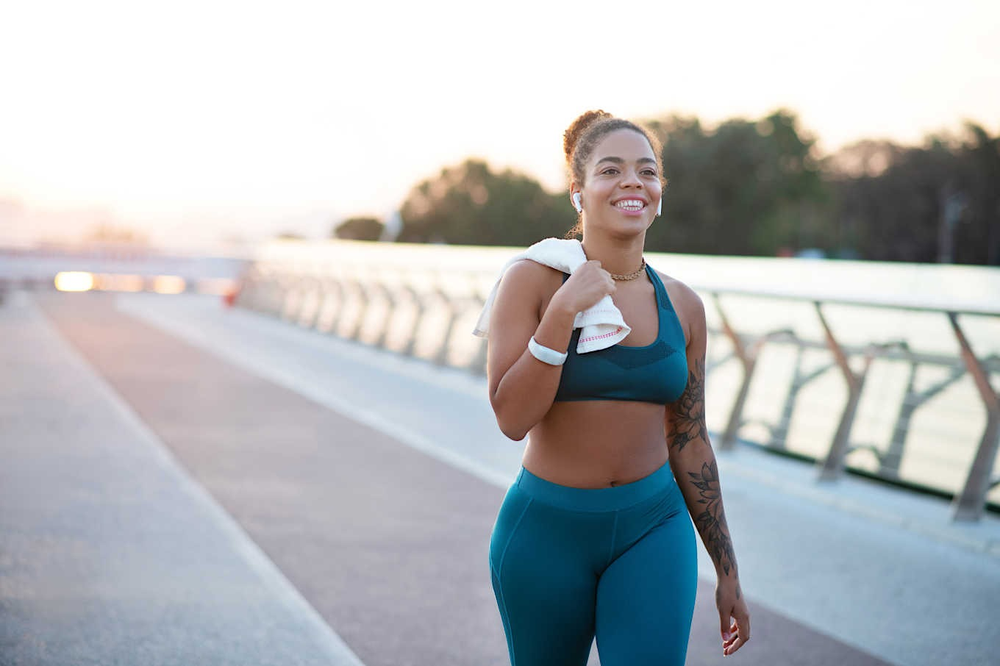

Monitoring ketones: how do I know I am in ketosis?
Thinking about monitoring ketones? You may choose to monitor blood, urine, or breath ketone levels to evaluate response to your keto diet and to provide extra motivation.
Read moreYou’ve done your research and want to get started on a keto diet, but aren’t sure where to begin? Follow these five steps to maximize your success.
Read moreThinking about monitoring ketones? You may choose to monitor blood, urine, or breath ketone levels to evaluate response to your keto diet and to provide extra motivation.
Read moreWhether you are new to keto or a low-carb veteran, finding nutritious keto-friendly foods can take some effort. Here are our top 10 keto foods to include in your rotation.
Read moreWhether you call it exercise, physical activity, or moving, learn how to create your own workout plan that becomes part of everyday life. Each of us, despite our interests or physical limitations, can learn to enjoy regular physical activity. The secret is discovering activities you like, are willing to make time for, and can perform without pain or injury. Sit less, stand more, and walk more because being sedentary is frankly a health risk. Being active and fit, even with higher body weight, protects and prolongs health.
 Read more